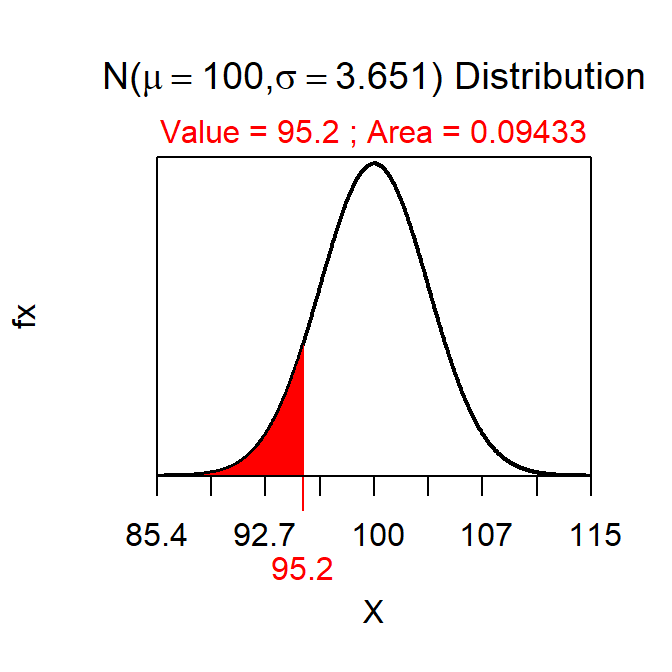
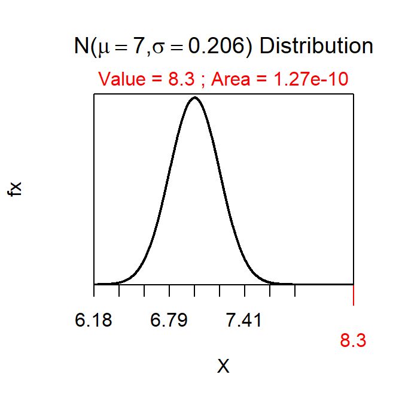
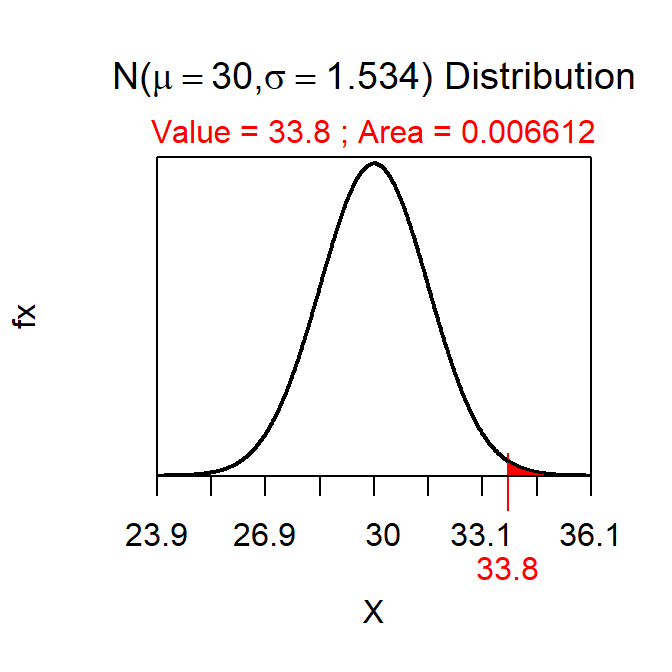

Steps to Follow
Constructing and interpreting a p-value is made easier with these steps.
- Identify H0 and HA
- Define the p-value specific to the situation.
- In the generic p-value definition (“probability of the observed statistic or a value more extreme assuming the H0 is true) replace”observed statistic" with the value of \(\bar{x}\), “more extreme” with “less”, “greater”, or “different” depending on HA, and “the H0 is true” with the specific value of μ in H0.
- Draw the null distribution.
- This is the sampling distribution assuming that H0 is true. Thus, it will be centered on the μ in H0 and will use a standard error of \(\frac{\sigma}{\sqrt{n}}\).
- Compute the p-value.
- This will be a FORWARD calculation on a normal distribution centered on μ from H0 with an area shaded “more extreme” (depending on HA) of \(\bar{x}\).
- If HA is a “not equals” then “more extreme” means into the nearest tail and then multiplied by 2.
- Make a decision about H0. If the question has a context then the parameter should be stated within the context of the question.
- If the p-value<α then reject H0 (in favor of HA.
- If the p-value>α then do not reject (DNR) H0 (in favor of HA.
First Example
Suppose that I hypothesized that the mean time to take a quiz is less than 100 minutes and that, in a sample of 30 students, the mean time to take the quiz was 95.2 minutes. Further, suppose that σ=20 and α=0.10.
- H0: μ=100 versus HA: μ<100, where μ is the mean time to take a quiz.
- The p-value is the “probability that \(\bar{x}\)=95.2 or less assuming that μ=100.”
- The null distribution will have a mean of 100 and a SE of \(\frac{20}{\sqrt{30}}\)=3.651. See drawing below.
- The p-value is 0.0943 as computed below.
- Reject H0 because p-value<α (i.e., 0.0943<0.10). Thus, it appears that the mean time for ALL students to take the quiz is less than 100 minutes.
> distrib(95.2,mean=100,sd=20/sqrt(30))

Second Example
Suppose that I hypothesized that the mean time to walk between the Science Center and the Ponzio Center is more than 7 minutes and that, in a sample of 50 students, the mean time to make this walk was 8.3 minutes. Further, suppose that σ=1.3 and α=0.05.
- H0: μ=7 versus HA: μ>7, where μ is the mean time to walk between the Science Center and the Ponzio Center.
- The p-value is the “probability that \(\bar{x}\)=8.3 or greater assuming that μ=7.”
- The null distribution will have a mean of 7 and a SE of \(\frac{1.3}{\sqrt{50}}\)=0.184. See drawing below.
- The p-value is 0.0000000000007687 as computed below. Note that the p-value does not need all of these decimals and, thus, I will usually show this as <0.00005.
- Reject H0 because p-value<α (i.e., <0.00005<0.05). Thus, it appears that the mean time for ALL students to walk between the Science Center and the Ponzio Center is greater than 7 minutes.
> distrib(8.3,mean=7,sd=1.3/sqrt(40),lower.tail=FALSE)

Third Example
Suppose that I hypothesized that the mean time students spend preparing for the prep check is different than 30 minutes and that, in a sample of 40 students, the mean preparation time was 33.8 minutes. Further, suppose that σ=9.7 and α=0.01.
When HA is a “not equals” then the area shaded on the null distribution is into the nearest tail. In this case, because \(\bar{x}\) (=33.8) was greater than the mean of the distribution (=30), I shaded to the right (into the nearer “upper tail”). If the \(\bar{x}\) had been lower, I would have shaded to the left. In these situations (i.e., when HA is a “not equals”) then the area returned by distrib() must be multiplied by two to get the p-value (to account for both tails of the same size).
- H0: μ=30 versus HA: μ≠30, where μ is the mean time preparing for the prep check.
- The p-value is the “probability that \(\bar{x}\)=33.8 or no assuming that μ=30.”
- The null distribution will have a mean of 30 and a SE of \(\frac{9.7}{\sqrt{40}}\)=1.534. See drawing below.
- The half p-value is 0.0066 as computed below. Thus, the p-value is 0.0132
- Do not reject H0 because p-value>α (i.e., 0.0132>0.01). Thus, it appears that the mean time that ALL students spend preparing for the prep check is not different than 30 minutes.
> distrib(33.8,mean=30,sd=9.7/sqrt(40),lower.tail=FALSE)
